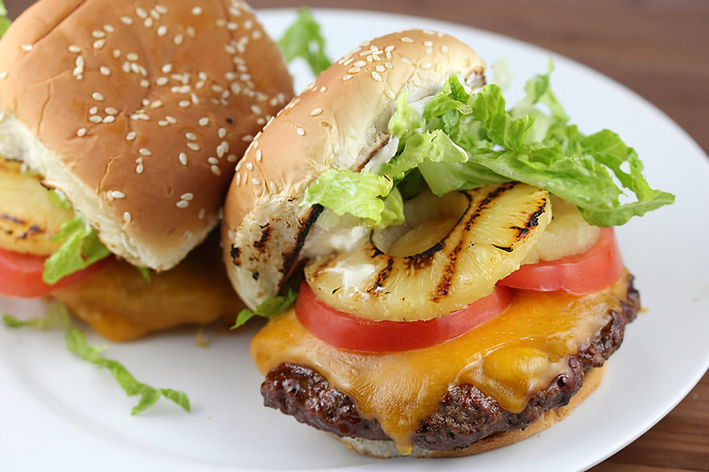

>
Banzai Burger
Banzai Burger

Description
This is a copy cat recipe of my favorite sandwhich from Red Robin.
Classic burger with a delicious Hawaiin twist!
Ingredients
- 1 pound ground beef
- Hamburger buns
- Butter
- Worcheshire Sauce
- Terriyaki Sauce
- Pineapple
- Sliced Cheddar
Directions
- Form the ground beef into patties.
- Add the Worcheshire to the patties, allowing the meat to absorb the sauce.
- Begin cooking the paties to desired doneness.
- Butter your buns, and place them on grill so that they may toast.
- Add sliced pineapple to grill when burgers are almost done.
- Place cheddar on the buger, allowing it to melt.
- Assemble your burger! Place patties on the buns. Drizzle as much terriyaki sauce as you desire.
- Top your burger with whatver else you want, such as lettuce or tomato.